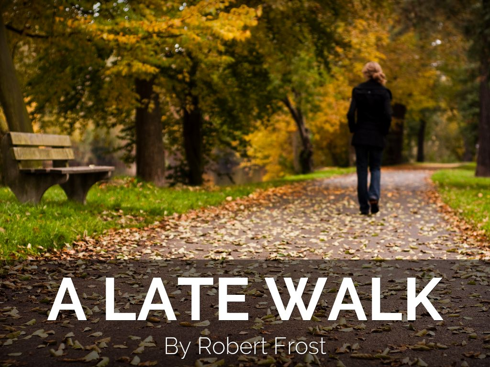

When I go up through the mowing field,
The headless aftermath,
Smooth-laid like thatch with the heavy dew,
Half closes the garden path.
And when I come to the garden ground,
The whir of sober birds
Up from the tangle of withered weeds
Is sadder than any words
A tree beside the wall stands bare,
But a leaf that lingered brown,
Disturbed, I doubt not, by my thought,
Comes softly rattling down.
I end not far from my going forth
By picking the faded blue
Of the last remaining aster flower
To carry again to you.